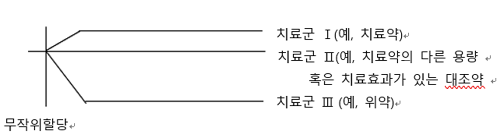
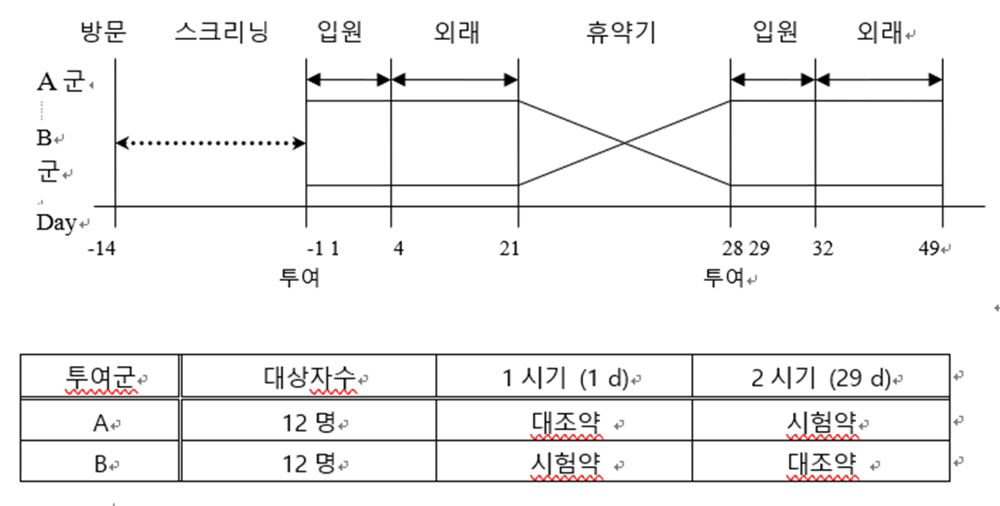
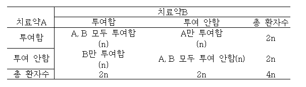

임상시험의 통계적 원칙 (E9) Part 1
신약 개발 전반의 통계적 설계와 고려사항
ICH E9 가이드라인은 임상시험의 설계, 수행, 분석 및 평가 전반에 걸쳐 통계적 원칙(Statistical Principles)을 정립함으로써, 신약의 유효성과 안전성을 과학적으로 입증하는 것을 목적으로 합니다 (International Council for Harmonisation 1998).
1. 통계적 설계의 기본 방향
임상시험에서 통계적 업무는 충분한 역량을 갖춘 통계 전문가(Statistician)의 책임하에 이루어져야 합니다. 특히 다음 두 가지 원칙을 관통해야 합니다.
- 편향(Bias)의 최소화: 결론의 타당성을 훼손하는 체계적 오류를 방지하는 작업.
- 정밀도(Precision)의 극대화: 무작위 오차를 줄여 추정치의 정확도를 높이는 작업.
2. 임상시험 설계의 주요 고려사항
임상시험의 맥락과 유형
- 확증적 임상시험 (Confirmatory Trial): 사전에 설정된 가설을 검정하고 임상적 유의성을 확보하기 위한 시험입니다. 통계적 가설 검정과 신뢰구간 추정이 핵심입니다.
- 탐색적 임상시험 (Exploratory Trial): 가설의 정교화 및 후속 시험을 위한 근거 마련에 초점을 둡니다.
평가변수 (Variables)의 선정
- 일차 변수 (Primary Variable): 시험 목적과 직결되며 표본 크기 산정의 근거가 되는 변수입니다.
- 복합 변수 (Composite Variables): 여러 지표를 통합하여 다중성 문제를 완화합니다.
- 대리 변수 (Surrogate Variables): 실제 임상적 유익성을 직접 측정하기 어려울 때 사용하는 간접 지표입니다.
3. 편향 방지를 위한 설계 기법
눈가림 (Blinding)
피험자나 연구자가 배정 정보를 알게 됨으로써 발생하는 심리적·주관적 편향을 차단합니다. 이중 눈가림(Double Blind)은 데이터 정리(Data Cleaning)가 완료될 때까지 엄격히 유지되어야 합니다.
무작위 배정 (Randomization)
군 간의 비교 가능성을 극대화하기 위해 대상자를 무작위로 할당합니다. 주로 블록 무작위 배정(Block Randomization)과 주요 예후 인자를 고려한 층화(Stratification)가 병행됩니다.
4. 임상시험 설계 구성 (Design Configuration)
- 평행군 설계 (Parallel Group Design): 가장 표준적인 방식으로, 대상자가 고정된 한 치료군에서 시험을 완료합니다.

- 교차 설계 (Crossover Design): 각 피험자가 순차적으로 여러 치료를 받으며, 잔류 효과(Carryover Effect) 제어를 위한 휴약기(Washout)가 중요합니다.

- 요인 설계 (Factorial Design): 두 개 이상의 치료 조합을 동시에 평가하여 치료 간 상호작용(Interaction)을 식별합니다.

5. 표본 크기와 분석 계획
표본 크기는 제1종 오류(\(\alpha\)), 검정력(\(1-\beta\)), 예상 효과 크기를 고려하여 통계적으로 산출되어야 하며, 이는 임상시험 계획서에 명시적인 근거와 함께 기술되어야 합니다.